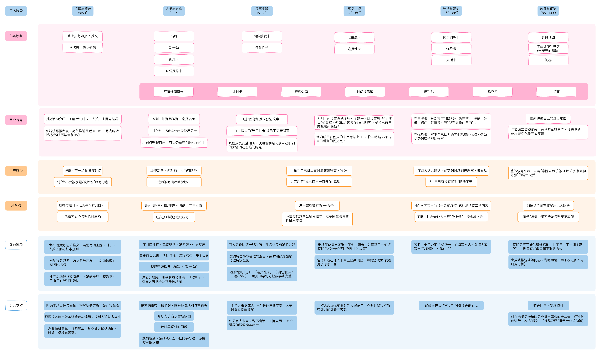

Narrative Room is a lightweight service system designed for young people navigating transitional periods, such as gap years or career changes. Centered around a replicable card-based toolkit, it combines spatial setup and facilitation scripts to create a temporary yet structured narrative container within shared community spaces. Over a 90–120 minute session, Narrative Room invites participants to revisit and reorganize their personal experiences through storytelling, recognize their own strengths, and establish initial bonds of mutual support with peers.
For community organizers, it functions as an accessible tool for activating participation within existing programs. For the community as a whole, it acts as a form of social infrastructure—one that gathers stories, fosters connection, and nurtures a sense of collective support. At its core, the project creates an opportunity for individuals to articulate who they are, encounter others in similar moments of transition, and take a small but meaningful step forward. At the same time, it plants the seeds for more sustainable relationships within the community.


Persona Set Developed for Narrative Room, identifying four typical transition-stage participants: the exploratory recent graduate, the post-corporate career shifter, the multidisciplinary creator seeking collaborators, and the independent freelancer in search of structure. These personas map different backgrounds, motivations, pain points, and support needs, helping define how the service system responds to uncertainty, experimentation, collaboration, and sustainable creative practice.

Service Blueprint of Narrative Room, illustrating how the experience unfolds across multiple stages — from recruitment and onboarding to narrative experimentation, reflection, and feedback — while tracing participant actions, emotional responses, risks, and facilitator interventions.


User Testing Session for Narrative Room, documenting how participants interacted with the card system, spatial setup, and facilitation flow. These sessions helped evaluate the usability of the toolkit and refine the structure of the experience.